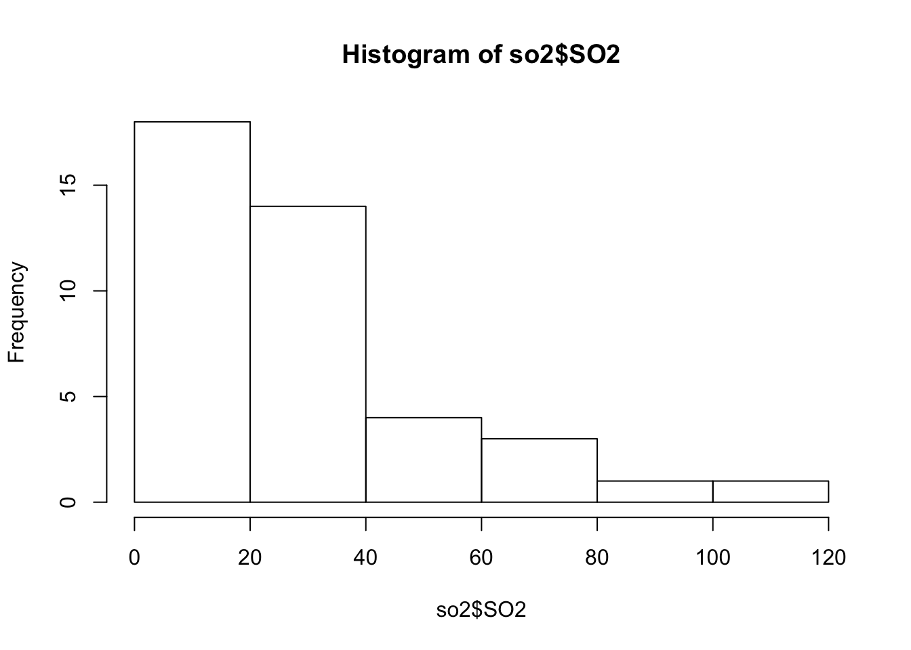
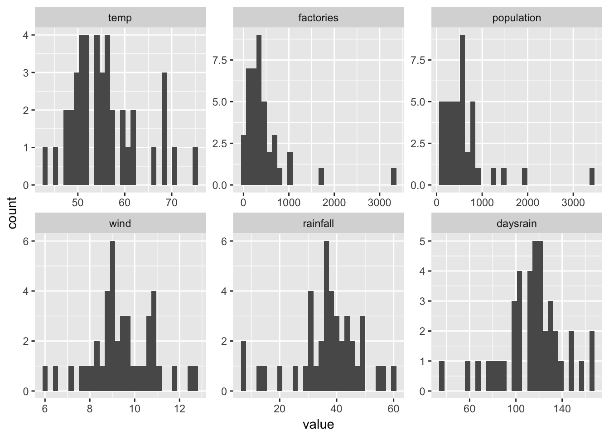
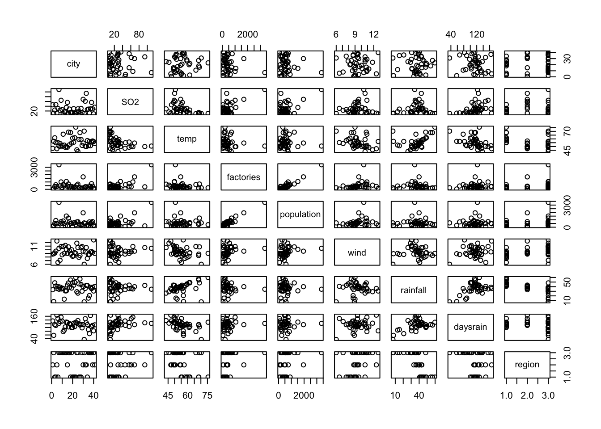
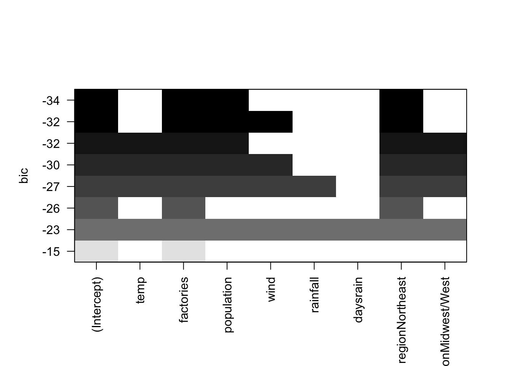
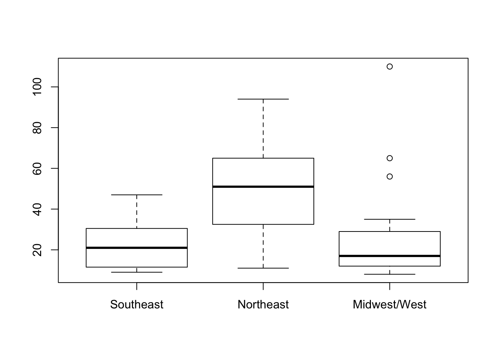

Last updated: 2018-01-08
Code version: ca6e6f8
Tutor: Cas Kruitwagen
First decide goal:
\[y_{ij} = \beta_0+\beta_{1}x_{i1}+\beta_{2}x_{i2}+...+\epsilon_i = \beta_0 + \sum_{j}{\beta_{j}x_j} + \epsilon_i\]
With \(\epsilon_i \sim N(0,\sigma^2)\)
Assumptions
Problems arise when the predictors are correlated.
Intrepretation of \(/beta_i\). Given all \(x_j, j \neq i\) are constant, a unit increase of \(x_i\) will lead to an increase in \(y_i\) with \(\beta_i\).
Calculated by applying least squares
\[min\ \sum_i{(y_i - \beta_0 + \sum_{j}{\beta_{j}x_j} + \epsilon_i)^2}\]
For 2 predictors, the residual variance has \(n-3\) degrees of freedom. (3 parameters fitted). This can be put in an ANOVA table.
Adjusted \(R^2\) is explained variation in population. \(R^2\) is variance explained in sample.
\[R_{adj}^2 = 1 - (1-R^2)\frac{n-1}{n-k-1}\]
In the case of \(k/n\) approaches 1, \(R_{adj}^2\) will be very low.
fit0 <- lm(y~1)
fit1 <- lm(y~x1)
fit2 <- lm(y~x2)
fit12 <- lm(y~x1+x2)
summary(fit0)$adj.r.squared[1] 0summary(fit1)$adj.r.squared[1] 0.527822summary(fit2)$adj.r.squared[1] 0.01295315summary(fit12)$adj.r.squared[1] 0.9643388anova(fit0, fit1, fit2, fit12)Analysis of Variance Table
Model 1: y ~ 1
Model 2: y ~ x1
Model 3: y ~ x2
Model 4: y ~ x1 + x2
Res.Df RSS Df Sum of Sq F Pr(>F)
1 19 1.59622
2 18 0.71403 1 0.88219 294.46 3.598e-12 ***
3 18 1.49262 0 -0.77859
4 17 0.05093 1 1.44168 481.21 6.575e-14 ***
---
Signif. codes: 0 '***' 0.001 '**' 0.01 '*' 0.05 '.' 0.1 ' ' 1anova(fit1, fit12)Analysis of Variance Table
Model 1: y ~ x1
Model 2: y ~ x1 + x2
Res.Df RSS Df Sum of Sq F Pr(>F)
1 18 0.71403
2 17 0.05093 1 0.6631 221.33 3.527e-11 ***
---
Signif. codes: 0 '***' 0.001 '**' 0.01 '*' 0.05 '.' 0.1 ' ' 1anova(fit0, fit2)Analysis of Variance Table
Model 1: y ~ 1
Model 2: y ~ x2
Res.Df RSS Df Sum of Sq F Pr(>F)
1 19 1.5962
2 18 1.4926 1 0.1036 1.2493 0.2784Formal testing: \(H_0:\ \beta_1=0|\beta_2 \neq 0\), \(H_1:\ \beta_1 \neq 0|\beta_2 \neq 0\)
Test by using t-test for coefficients. Degrees of freedom are lowered by all necessary estimated parameters.
‘Expensive models’ is using op degrees of freedom.
ANOVA table tests whether the effects of all explenatory variables in a model are zero or not.
Acaida information criteria for checking significant difference between non-nested models
With \(k\) explenatory variables, there are \(2^k\) possible models.
LASSO, cross-validation, and shrinkage by bootstrap
Noise and predictor variables, without correlation in between predictors
set.seed(2)
n_patients = 1000
n_noise_variables = 10
n_explenatory_variables = 10
real_coefficients = runif(n_explenatory_variables, min = -1, max = 1)
s_response = 0.2
predictors <- matrix(runif(n_patients * n_explenatory_variables), nrow = n_patients)
noise <- matrix(runif(n_patients * n_noise_variables), nrow = n_patients)
# response is dot-product of each row with the coefficients
# can be calculated with matrix multiplication
response = rowSums(predictors %*% real_coefficients) + rnorm(n_patients, sd = s_response)
myData <- data.frame(
y = response, cbind(predictors, noise)
)
fit_all <- lm(y~., data = myData)
summary(fit_all)
Call:
lm(formula = y ~ ., data = myData)
Residuals:
Min 1Q Median 3Q Max
-0.78260 -0.13659 -0.00092 0.14053 0.58946
Coefficients:
Estimate Std. Error t value Pr(>|t|)
(Intercept) 0.0262295 0.0509943 0.514 0.60712
X1 -0.6446580 0.0221505 -29.103 < 2e-16 ***
X2 0.4238112 0.0223328 18.977 < 2e-16 ***
X3 0.1510867 0.0228293 6.618 5.98e-11 ***
X4 -0.6470950 0.0228776 -28.285 < 2e-16 ***
X5 0.8623342 0.0224493 38.413 < 2e-16 ***
X6 0.8880544 0.0227584 39.021 < 2e-16 ***
X7 -0.7678504 0.0226384 -33.918 < 2e-16 ***
X8 0.6791997 0.0228070 29.780 < 2e-16 ***
X9 -0.0505276 0.0228661 -2.210 0.02736 *
X10 0.0972956 0.0228929 4.250 2.34e-05 ***
X11 0.0098150 0.0228936 0.429 0.66822
X12 -0.0217505 0.0228562 -0.952 0.34152
X13 -0.0104170 0.0221047 -0.471 0.63756
X14 0.0205645 0.0223007 0.922 0.35668
X15 -0.0660169 0.0228954 -2.883 0.00402 **
X16 0.0001305 0.0226399 0.006 0.99540
X17 -0.0242034 0.0225604 -1.073 0.28361
X18 0.0126597 0.0223977 0.565 0.57205
X19 0.0212047 0.0221814 0.956 0.33932
X20 0.0169994 0.0229204 0.742 0.45846
---
Signif. codes: 0 '***' 0.001 '**' 0.01 '*' 0.05 '.' 0.1 ' ' 1
Residual standard error: 0.2062 on 979 degrees of freedom
Multiple R-squared: 0.8812, Adjusted R-squared: 0.8788
F-statistic: 363 on 20 and 979 DF, p-value: < 2.2e-16US \(SO_2\) pollution.
load(amstR::fromParentDir("data/so2.RData"))
hist(so2$SO2)
Skewed predictors is not necessarily a problem.
require(dplyr); require(ggplot2)
so2 %>%
select(-c(SO2, city, region)) %>%
data.table::melt() %>%
ggplot(aes(x = value)) +
geom_histogram() +
facet_wrap(~variable, scales = "free")
pairs(so2)
Full model (without city due to too many levels)
fit <- lm(SO2~., data = (so2 %>% dplyr::select(-city)))
summary(fit)
Call:
lm(formula = SO2 ~ ., data = (so2 %>% dplyr::select(-city)))
Residuals:
Min 1Q Median 3Q Max
-31.138 -8.660 -0.319 5.948 39.116
Coefficients:
Estimate Std. Error t value Pr(>|t|)
(Intercept) 95.13637 43.09542 2.208 0.034563 *
temp -0.91163 0.57062 -1.598 0.119955
factories 0.06244 0.01430 4.368 0.000123 ***
population -0.03533 0.01370 -2.579 0.014723 *
wind -2.65271 1.79926 -1.474 0.150162
rainfall 0.24013 0.39457 0.609 0.547102
daysrain -0.04838 0.14669 -0.330 0.743667
regionNortheast 14.13675 7.53188 1.877 0.069672 .
regionMidwest/West -5.25371 7.83874 -0.670 0.507524
---
Signif. codes: 0 '***' 0.001 '**' 0.01 '*' 0.05 '.' 0.1 ' ' 1
Residual standard error: 13.18 on 32 degrees of freedom
Multiple R-squared: 0.7478, Adjusted R-squared: 0.6848
F-statistic: 11.86 on 8 and 32 DF, p-value: 1.152e-07Stepwise selection
library(MASS)
fit_step <- stepAIC(fit, direction = "both")Start: AIC=219.29
SO2 ~ temp + factories + population + wind + rainfall + daysrain +
region
Df Sum of Sq RSS AIC
- daysrain 1 18.9 5576.8 217.43
- rainfall 1 64.3 5622.2 217.76
<none> 5557.9 219.29
- wind 1 377.5 5935.4 219.98
- temp 1 443.3 6001.2 220.43
- population 1 1154.9 6712.8 225.03
- region 2 1725.4 7283.3 226.37
- factories 1 3313.9 8871.8 236.46
Step: AIC=217.42
SO2 ~ temp + factories + population + wind + rainfall + region
Df Sum of Sq RSS AIC
- rainfall 1 49.2 5626.0 215.78
<none> 5576.8 217.43
- wind 1 358.9 5935.7 217.98
+ daysrain 1 18.9 5557.9 219.29
- temp 1 662.8 6239.6 220.03
- population 1 1160.0 6736.8 223.17
- region 2 1728.6 7305.4 224.50
- factories 1 3316.6 8893.4 234.56
Step: AIC=215.78
SO2 ~ temp + factories + population + wind + region
Df Sum of Sq RSS AIC
<none> 5626.0 215.78
- wind 1 309.8 5935.8 215.98
+ rainfall 1 49.2 5576.8 217.43
+ daysrain 1 3.8 5622.2 217.76
- temp 1 614.6 6240.6 218.04
- population 1 1247.5 6873.5 222.00
- region 2 2464.8 8090.8 226.68
- factories 1 3589.2 9215.2 234.02summary(fit_step)
Call:
lm(formula = SO2 ~ temp + factories + population + wind + region,
data = (so2 %>% dplyr::select(-city)))
Residuals:
Min 1Q Median 3Q Max
-33.912 -7.646 0.102 5.037 39.960
Coefficients:
Estimate Std. Error t value Pr(>|t|)
(Intercept) 84.66810 28.26707 2.995 0.00509 **
temp -0.71117 0.36900 -1.927 0.06234 .
factories 0.06387 0.01371 4.657 4.76e-05 ***
population -0.03638 0.01325 -2.746 0.00958 **
wind -2.17945 1.59285 -1.368 0.18020
regionNortheast 12.63719 6.92759 1.824 0.07692 .
regionMidwest/West -8.35751 5.55350 -1.505 0.14158
---
Signif. codes: 0 '***' 0.001 '**' 0.01 '*' 0.05 '.' 0.1 ' ' 1
Residual standard error: 12.86 on 34 degrees of freedom
Multiple R-squared: 0.7447, Adjusted R-squared: 0.6997
F-statistic: 16.53 on 6 and 34 DF, p-value: 8.184e-09anova(fit_step)Analysis of Variance Table
Response: SO2
Df Sum Sq Mean Sq F value Pr(>F)
temp 1 4143.3 4143.3 25.0397 1.698e-05 ***
factories 1 7230.8 7230.8 43.6983 1.403e-07 ***
population 1 2125.2 2125.2 12.8431 0.001048 **
wind 1 447.9 447.9 2.7068 0.109136
region 2 2464.8 1232.4 7.4478 0.002078 **
Residuals 34 5626.0 165.5
---
Signif. codes: 0 '***' 0.001 '**' 0.01 '*' 0.05 '.' 0.1 ' ' 1anova(fit, fit_step)Analysis of Variance Table
Model 1: SO2 ~ temp + factories + population + wind + rainfall + daysrain +
region
Model 2: SO2 ~ temp + factories + population + wind + region
Res.Df RSS Df Sum of Sq F Pr(>F)
1 32 5557.9
2 34 5626.0 -2 -68.08 0.196 0.823Stepwise:
SPSS: p-value for forward selection is 0.05, for backward selection: 0.1
fit_leap <- leaps::regsubsets(SO2~., data = (so2 %>% dplyr::select(-city)))
summary(fit_leap)Subset selection object
Call: (function (rmd, seed, ...)
{
if (!(is.character(rmd) && length(rmd) == 1))
stop("rmd must be a one element character vector")
if (!(is.numeric(seed) && length(seed) == 1))
stop("seed must be a one element numeric vector")
if (!file.exists(rmd))
stop("rmd must exist")
set.seed(seed)
rmarkdown::render_site(rmd, ...)
})("c9_multiple_regression.Rmd", 12345)
8 Variables (and intercept)
Forced in Forced out
temp FALSE FALSE
factories FALSE FALSE
population FALSE FALSE
wind FALSE FALSE
rainfall FALSE FALSE
daysrain FALSE FALSE
regionNortheast FALSE FALSE
regionMidwest/West FALSE FALSE
1 subsets of each size up to 8
Selection Algorithm: exhaustive
temp factories population wind rainfall daysrain regionNortheast
1 ( 1 ) " " "*" " " " " " " " " " "
2 ( 1 ) " " "*" " " " " " " " " "*"
3 ( 1 ) " " "*" "*" " " " " " " "*"
4 ( 1 ) " " "*" "*" "*" " " " " "*"
5 ( 1 ) "*" "*" "*" " " " " " " "*"
6 ( 1 ) "*" "*" "*" "*" " " " " "*"
7 ( 1 ) "*" "*" "*" "*" "*" " " "*"
8 ( 1 ) "*" "*" "*" "*" "*" "*" "*"
regionMidwest/West
1 ( 1 ) " "
2 ( 1 ) " "
3 ( 1 ) " "
4 ( 1 ) " "
5 ( 1 ) "*"
6 ( 1 ) "*"
7 ( 1 ) "*"
8 ( 1 ) "*" plot(fit_leap)
When \(x_1\) and \(x_2\) are correlated, the \(\beta_1\) may increase by adding \(x_2\) to the models, and \(SE(\beta_1)\) may increase too. It’s T-statistic will remain approximately the same.
Assumptions
NB: no conditions for the distribution of the explenatory assumptions
lm(SO2~factories, data = so2) %>% summary()
Call:
lm(formula = SO2 ~ factories, data = so2)
Residuals:
Min 1Q Median 3Q Max
-26.976 -12.968 -3.495 6.710 67.177
Coefficients:
Estimate Std. Error t value Pr(>|t|)
(Intercept) 17.610574 3.691587 4.770 2.58e-05 ***
factories 0.026859 0.005099 5.268 5.36e-06 ***
---
Signif. codes: 0 '***' 0.001 '**' 0.01 '*' 0.05 '.' 0.1 ' ' 1
Residual standard error: 18.17 on 39 degrees of freedom
Multiple R-squared: 0.4157, Adjusted R-squared: 0.4007
F-statistic: 27.75 on 1 and 39 DF, p-value: 5.363e-06lm(SO2~population, data = so2) %>% summary()
Call:
lm(formula = SO2 ~ population, data = so2)
Residuals:
Min 1Q Median 3Q Max
-32.545 -14.456 -4.019 11.019 72.549
Coefficients:
Estimate Std. Error t value Pr(>|t|)
(Intercept) 17.868316 4.713844 3.791 0.000509 ***
population 0.020014 0.005644 3.546 0.001035 **
---
Signif. codes: 0 '***' 0.001 '**' 0.01 '*' 0.05 '.' 0.1 ' ' 1
Residual standard error: 20.67 on 39 degrees of freedom
Multiple R-squared: 0.2438, Adjusted R-squared: 0.2244
F-statistic: 12.57 on 1 and 39 DF, p-value: 0.001035lm(SO2~factories+population, data = so2) %>% summary()
Call:
lm(formula = SO2 ~ factories + population, data = so2)
Residuals:
Min 1Q Median 3Q Max
-22.389 -12.831 -1.277 7.609 49.533
Coefficients:
Estimate Std. Error t value Pr(>|t|)
(Intercept) 26.32508 3.84044 6.855 3.87e-08 ***
factories 0.08243 0.01470 5.609 1.96e-06 ***
population -0.05661 0.01430 -3.959 0.000319 ***
---
Signif. codes: 0 '***' 0.001 '**' 0.01 '*' 0.05 '.' 0.1 ' ' 1
Residual standard error: 15.49 on 38 degrees of freedom
Multiple R-squared: 0.5863, Adjusted R-squared: 0.5645
F-statistic: 26.93 on 2 and 38 DF, p-value: 5.207e-08Added effect of another predictor is limited, because it information was already used in the earlier included predictors.
Perfectly independent explenatory variables: adding the second does not alter the first. Perfectly correlated explenatory variables: there are multiple solutions.
set.seed(2)
n = 10
x1 <- runif(n)
x2 <- 2*x1
y <- 3*x1 + rnorm(n, sd = .1)
lm(y~x1+x2) %>% summary()
Call:
lm(formula = y ~ x1 + x2)
Residuals:
Min 1Q Median 3Q Max
-0.155531 -0.059312 -0.001356 0.046648 0.136305
Coefficients: (1 not defined because of singularities)
Estimate Std. Error t value Pr(>|t|)
(Intercept) 0.10664 0.06284 1.697 0.128
x1 2.88231 0.10065 28.636 2.39e-09 ***
x2 NA NA NA NA
---
Signif. codes: 0 '***' 0.001 '**' 0.01 '*' 0.05 '.' 0.1 ' ' 1
Residual standard error: 0.09426 on 8 degrees of freedom
Multiple R-squared: 0.9903, Adjusted R-squared: 0.9891
F-statistic: 820 on 1 and 8 DF, p-value: 2.392e-09With high correlation:
Indicators:
Tolerance is \(1-R^2\) in a model with one of the explanatory variables is taken as the dependent variable and (some of) the other explanatory variables are taken as the independents.
Rule of thumb: tolerance of 0.4 is acceptable (0.1 or 0.2 is sometimes stated)
Variance inflation factor (VIF): \(VIF = \frac{1}{tolerance}\)
The variance of the estimates of the coefficients is inflated with the VIF.
Pick the more logical factor Mean-centering may help (correlation between x1 and x2 may be more than between x1-(mean(x1) and x2)).
Create dummy variables
boxplot(SO2~region, data = so2)
lm(SO2~region, data = so2) %>% summary()
Call:
lm(formula = SO2 ~ region, data = so2)
Residuals:
Min 1Q Median 3Q Max
-39.25 -13.00 -4.00 8.00 83.00
Coefficients:
Estimate Std. Error t value Pr(>|t|)
(Intercept) 21.917 6.245 3.509 0.00117 **
regionNortheast 28.333 9.874 2.869 0.00668 **
regionMidwest/West 5.083 7.829 0.649 0.52003
---
Signif. codes: 0 '***' 0.001 '**' 0.01 '*' 0.05 '.' 0.1 ' ' 1
Residual standard error: 21.63 on 38 degrees of freedom
Multiple R-squared: 0.193, Adjusted R-squared: 0.1505
F-statistic: 4.544 on 2 and 38 DF, p-value: 0.017This makes sure that the degrees of freedom still equals that of an ANOVA.
So 1 variable in linear regression takes up 1 degree of freedom. 1 categorical variable in ANOVA with j levels takes up j-1 degrees of freedom. When creating dummy variables, j-1 dummy variables will be created.
The p-values of the dummy categories are usually not corrected for multiple testing, while in ANOVA they would be, as part of the post-hoc testing.
NB the dummy variables need to be entered ‘en block’. This messes up stepwise selection, because p-values are calculated for each dummy variable separately.
Large to do exact sample size calculation, it takes many assumptions.
Rule of thumb: 10-15 cases for each parameter (except the constant, but including dummy variables, interactions etc).
For precision: only the final model matters For over-fitting: all considered models matter.
In R: do not add them to the scope of drop1, add1 or step.
Default in R and SPSS is doing a complete cases on all potentially included variables.
Both R and SPSS have functions for “missing values analysis”. Detection and detection of patterns.
Problems with complete cases: * selection bias (systematic missings) * loss of power
Solutions
5-10% ** remove variable (sub-optimal) ** multiple imputation
Practical: take the product of 2 variables as a new variable
lm(SO2 ~ factories*population, data = so2) %>% summary()
Call:
lm(formula = SO2 ~ factories * population, data = so2)
Residuals:
Min 1Q Median 3Q Max
-21.666 -11.919 -1.223 7.661 49.634
Coefficients:
Estimate Std. Error t value Pr(>|t|)
(Intercept) 2.735e+01 5.204e+00 5.256 6.38e-06 ***
factories 7.909e-02 1.866e-02 4.238 0.000144 ***
population -5.692e-02 1.451e-02 -3.922 0.000366 ***
factories:population 1.215e-06 4.088e-06 0.297 0.767959
---
Signif. codes: 0 '***' 0.001 '**' 0.01 '*' 0.05 '.' 0.1 ' ' 1
Residual standard error: 15.68 on 37 degrees of freedom
Multiple R-squared: 0.5873, Adjusted R-squared: 0.5538
F-statistic: 17.55 on 3 and 37 DF, p-value: 2.991e-07lm(SO2 ~ factories+population, data = so2) %>% summary()
Call:
lm(formula = SO2 ~ factories + population, data = so2)
Residuals:
Min 1Q Median 3Q Max
-22.389 -12.831 -1.277 7.609 49.533
Coefficients:
Estimate Std. Error t value Pr(>|t|)
(Intercept) 26.32508 3.84044 6.855 3.87e-08 ***
factories 0.08243 0.01470 5.609 1.96e-06 ***
population -0.05661 0.01430 -3.959 0.000319 ***
---
Signif. codes: 0 '***' 0.001 '**' 0.01 '*' 0.05 '.' 0.1 ' ' 1
Residual standard error: 15.49 on 38 degrees of freedom
Multiple R-squared: 0.5863, Adjusted R-squared: 0.5645
F-statistic: 26.93 on 2 and 38 DF, p-value: 5.207e-08\[y_i = \beta_0 + \beta_{1}x_1 + \sum_{j}{\beta_{0j}x_{dummy,j}} + \sum_{j}{\beta_{1j}x_1}\]
Where \(x_{dummy,j} \in (0,1)\).
df from anova(fit12), compare with ANOVA result from slides
sessionInfo()R version 3.3.2 (2016-10-31)
Platform: x86_64-apple-darwin13.4.0 (64-bit)
Running under: macOS Sierra 10.12.6
locale:
[1] en_US.UTF-8/en_US.UTF-8/en_US.UTF-8/C/en_US.UTF-8/en_US.UTF-8
attached base packages:
[1] stats graphics grDevices utils datasets methods base
other attached packages:
[1] MASS_7.3-47 ggplot2_2.2.1 dplyr_0.7.4
loaded via a namespace (and not attached):
[1] Rcpp_0.12.14 survcomp_1.22.0 plyr_1.8.4
[4] RColorBrewer_1.1-2 git2r_0.20.0 bindr_0.1
[7] tools_3.3.2 digest_0.6.13 gtable_0.2.0
[10] evaluate_0.10.1 tibble_1.3.4 lattice_0.20-35
[13] pkgconfig_2.0.1 rlang_0.1.6 Matrix_1.2-10
[16] yaml_2.1.16 prodlim_1.6.1 bindrcpp_0.2
[19] bootstrap_2017.2 amstR_0.1.3 stringr_1.2.0
[22] knitr_1.18 SuppDists_1.1-9.4 rprojroot_1.2
[25] grid_3.3.2 glue_1.2.0 data.table_1.10.4
[28] R6_2.2.2 survival_2.41-3 rmarkdown_1.8
[31] lava_1.5 rmeta_2.16 reshape2_1.4.2
[34] magrittr_1.5 leaps_3.0 scales_0.4.1
[37] backports_1.1.0 htmltools_0.3.6 survivalROC_1.0.3
[40] splines_3.3.2 assertthat_0.2.0 colorspace_1.3-2
[43] labeling_0.3 KernSmooth_2.23-15 stringi_1.1.6
[46] lazyeval_0.2.0 munsell_0.4.3 This R Markdown site was created with workflowr